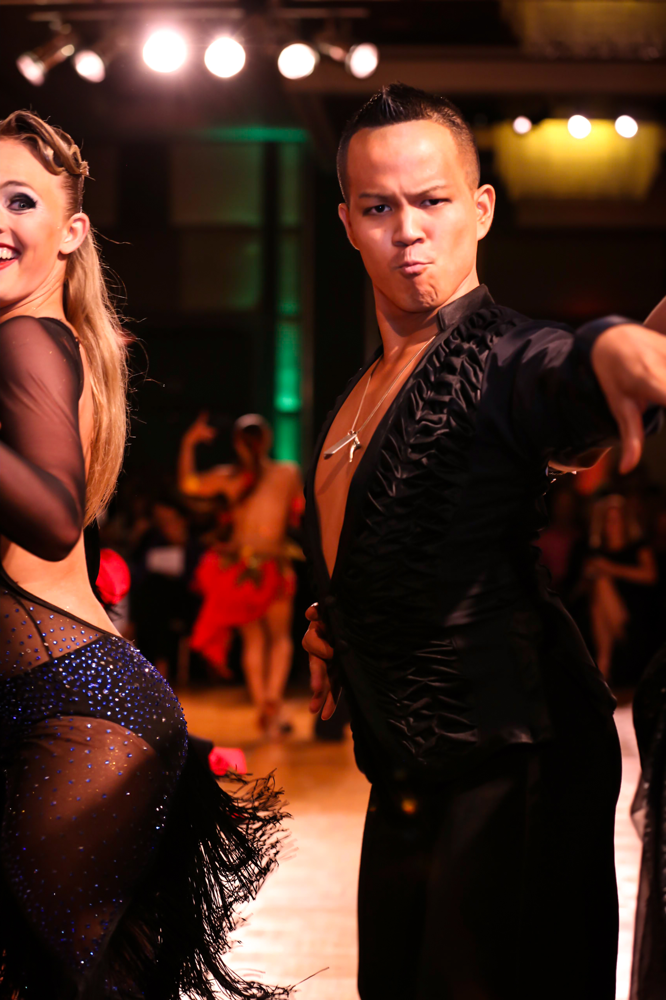

About Us
Daniel Lee Tran & Taylor Elizabeth Kinney first began their partnership in June of 2011. Within their first year of competition, they managed to seize numerous amateur titles both in the International Latin and American Rhythm category. By March of 2012, they claimed the United States National American Rhythm title and remained undefeated in the Rhythm category for the remainder of their amateur careers, defending their title in 2013 as well as claiming the World Cup title during both years.
Dan and Taylor made the final leap and turned Professional in November of 2013. They achieved very strong results right off the bat, consistently landing in top placements in the Rising Star events and strong finishes in the Open division. Together, they are well on their way towards making a name for themselves in the Professional divisions.
In 2015, they became contestants of the year-long DanceBeat Star Rhythm Tour. Seeing it as an opportunity to boast their creativity and performance skills, Dan and Taylor jumped right in and within the first leg of the tour, they walked away with a 5th place finish ahead of established national finalists and also were awarded the "Audience Favorite" award. Throughout the tour, Dan and Taylor continued to win over audiences and worked their way up the rankings, culminating in a 3rd place finish at the grand finale.
Besides competition, Dan and Taylor have also participated in many exciting events, including the Dancing with the Stars' 2011 "Ballroom Battle," the 2012 "Dancing with San Francisco's Stars" gala, the 2013 & 2014 Stanford Viennese Ball, the 2013 South Bay Yelp "Art of Entertainment" kickoff party, the 2014 TEDxStanford event, and the World Education Congress to name a few. The two have also made tremendous contributions towards education in ballroom dancing, having worked with young students involved with Stanford University's dance programs as well as American Rhythm dancers across the nation who have been inspired by what the team of two have accomplished together.
Dan & Taylor have been lucky enough to train with some of the top coaches in the world. The list includes Jose DeCamps, Joanna Zacharewicz, Carolina Orlovsky, Corky Ballas, Valentina Kostenko, Gary McDonald, Viktoriya Franova, Taliat Tarsinov, Eugene Katsevman, Giacomo Stecagglia, Joanna Siekierska, and Steve Vasco.
Daniel Lee Tran

Daniel (or Dan) is currently a full-time ballroom dance instructor. He is highly sought out and has won numerous Top Teacher awards for his work in the Pro/Am field, having produced multiple world finalists and champions. Dan also trains competitive amateur Dancesport couples including United States finalists and Regional Champions.
Dan appreciates the positive impact his own teachers have made on his life and loves to do the same for others. He especially enjoys creating a plan for a student's progress, and shares in their enthusiasm when they achieve individual goals. To him, structure and a well-crafted curriculum are the key to his success in the industry.
Besides teaching and competing, Dan has dedicated a lot of his time to the promotion of ballroom dance in the University setting, having been involved with numerous college teams. Dan also has tremendous background in event organizing, having help put together numerous successful events across California. He has a background in Business at San Jose State University, where he tried ballroom dancing for the first time. Whenever he is not teaching, Dan continues to expand his knowledge in dancing, communications, teaching, and more in order to provide the best for his students. Dan specializes in American Rhythm, as well as International Latin, Salsa, Swing, Hustle, Nightclub Two-Step and American Smooth.
Students have achieved the following titles:
- 2013 United States Bronze International Latin Vice-Champions
- 2013 California State Silver & Gold International Latin Champions
- Winner of numerous Pro/Am Scholarship Championships including
- 1st Place World Championship Bronze A Rhythm
- 2nd Place World Championship Silver A Rhythm
- 4th Place World Championship Open A Rhythm
- 3rd Place World Championship Open B Rhythm
- 3rd Place World Championship Open Senior Rhythm
- 3rd Place World Championship Bronze A Latin
- 1st Place Emerald Ball Bronze B Rhythm
- 2nd Place Emerald Ball Open B Rhythm
- 1st Place San Francisco Open Bronze A Rhythm
- 1st Place San Francisco Open Silver A Rhythm
- 1st Place International Grand Ball Bronze B Rhythm
- 1st Place International Grand Ball Silver A Rhythm
- 1st Place Pacific Grand Ball Open A, B, & C Rhythm
- 1st Place City Lights Ball Open Senior Smooth, Rhythm, & Nine-Dance
Taylor Elizabeth Kinney
Taylor is a contagiously positive person who LOVES to share her passion for dance with others through teaching and performance. She is high on life and drunk on music… and she likes it that way! A charismatic, natural performer, Taylor lights up with the music and strives to spread joy and provoke emotion with her performance.
After beginning her training in contemporary dance and ballet at a young age, Taylor was drawn to the beauty of connection in partner dancing and started training competitively in International Standard and Latin Ballroom in high school. Taylor fell in love with the music and style of American Rhythm, and she now competes professionally in Rhythm with her partner, Dan Tran. Taylor’s favorite part about ballroom is that it is not only an athletic and artistic outlet, but it is also a space to explore and express human connection.
After recently graduating Phi Beta Kappa from Stanford University with a double major in Psychology and English, Taylor is now an executive recruiter at Spencer Stuart by day and a dancer by night. Taylor teaches private lessons, offers group classes, and choreographs for musicals as well as coaching for the Stanford Salsa team (Los Salseros de Stanford). Taylor’s goal as a dance teacher and coach is to help her students gain the confidence, awareness, and technique to fully enjoy and express both the music and their connection to their partners. She specializes in American Rhythm, as well as International Latin, International Standard, American Smooth, Salsa, Swing, Hustle, Nightclub Two Step, Jazz, and Contemporary.
Friends & Sponsors
Costumes - Spark by Joanna
Shoes - Crown Dance Shoes
Photos - Dancesport Photography by Alexander Rowan